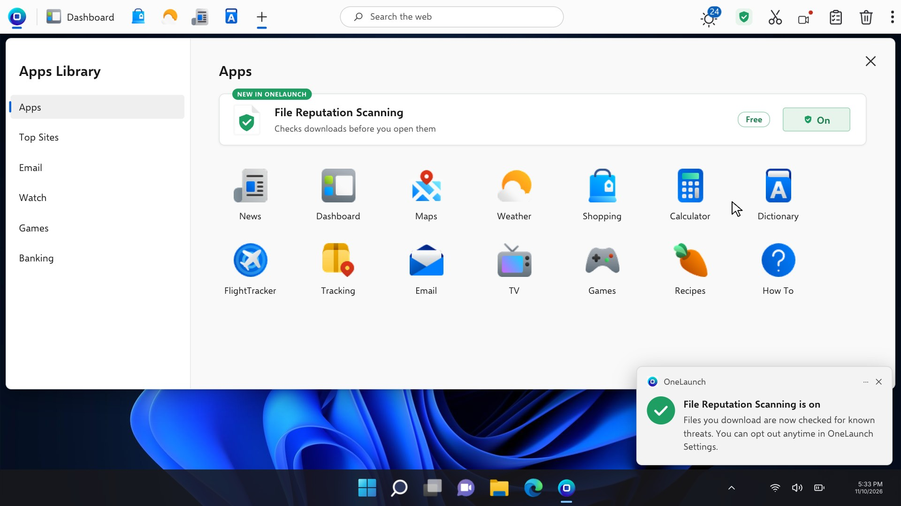
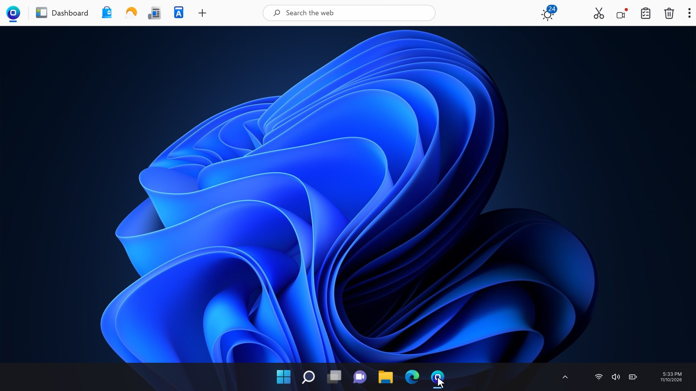
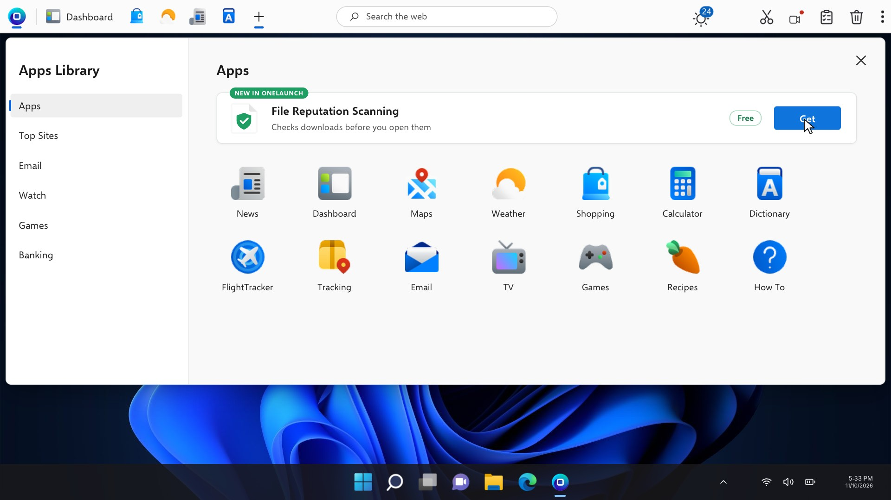
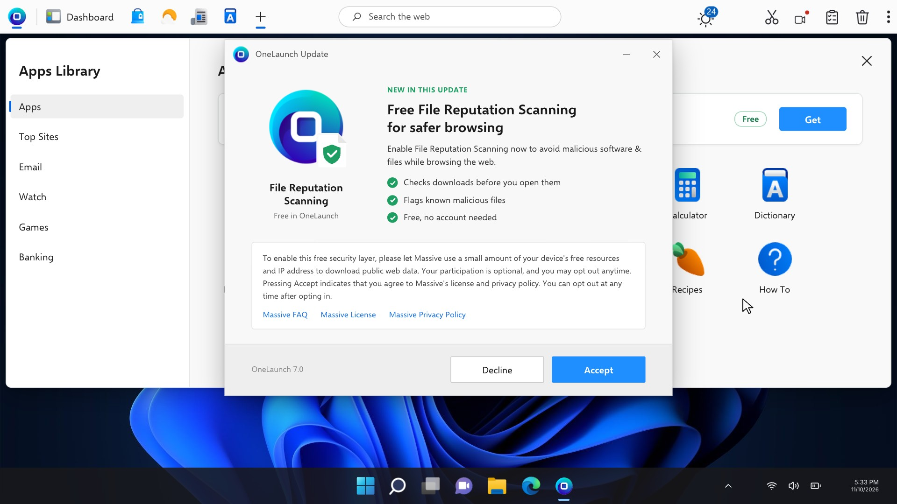
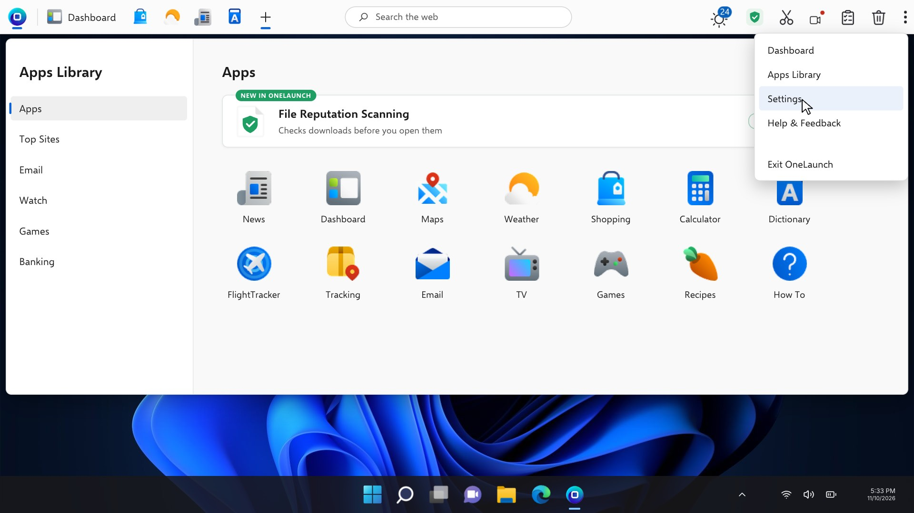
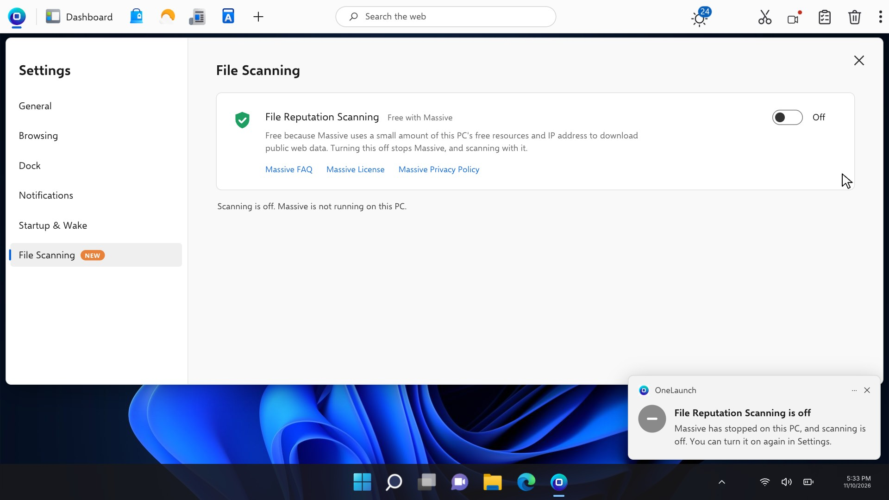

The opt-in flow, one screen at a time: one prompt, one click, and an off switch.


1The OneLaunch dock slides in across the top of the screen.
The Apps Library opens on Apps, with the new feature first.

1Nothing turns on yet. OneLaunch asks first, in one dialog.

1 2Massive's FAQ, License and Privacy Policy, one click away.
Click Accept, and File Reputation Scanning turns on.

1 2OneLaunch Settings opens. A new page, File Scanning, is in the list.

1 2 3Massive stops on this PC, and scanning goes with it. The shield leaves the dock. It can be turned on again anytime in Settings.
Get only opens the dialog. Scanning and Massive start after the user accepts.
Accept and Decline are the same size, and nothing is chosen for the user.
Turning it off stops Massive on the PC, and the free scanning goes with it.
Add the Massive SDK and consent screen to OneLaunch.
Launch in the next update and track opt-ins.